Lest the name “Booth” in the last story leave us remembering a villainous assassin, consider a far better man by that name, though unrelated and preceding the former by a generation, yet long since hidden in history. Suitable for summertime reading, this story from 1843 is of Pennsylvania’s pioneer in chemistry and geology who, like others has found inspiration at Elizabeth Furnace. James Curtis Booth possessed a profound mind and left lifetime achievements, a renaissance man who, for a few weeks, enjoyed the hospitality of the Coleman family.
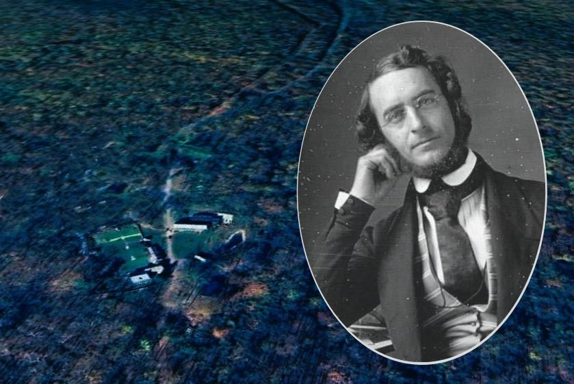
“Blue Hills of Elizabeth Receding in the Distance”
So wrote an appreciative and eloquent James Curtis Booth in a letter to his hostess Harriet Coleman as he returned to the busy life in Philadelphia from an idyllic summer stay at the Coleman estate near Brickerville. Graceful prose filled the lengthy letter as he sought words to express gratitude for the many kindnesses extended to him by her and the Coleman family.
“Again and repeatedly my thoughts revert to Elizabeth and the many delightful days passed within her domain, thoughts of pleasure heightened by the contrast presented in the cold formalities and narrowly bounded views of a city life.”
One would be surprised to know that such poetic and romantic words came from a man of science and technology.
He elaborates on the pleasures of the countryside, noting that while some folk find a kind of passive enjoyment when surveying “the varied features of hill and valley, forest and field;” he determines that “a higher delight is derived from an active enjoyment of them.”
He continues, “a fine prospect pleases, but if labor must be expended to secure it, it delights. A garden flower pleases, but the toil of procuring flowers from nature’s garden adds new beauty to them.”
Profound words such as those are rare these days.
James Curtis Booth (1810-1888)
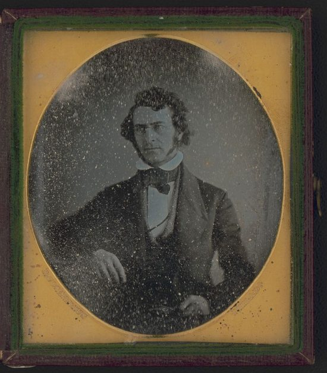
Possessing more than eloquence, Booth was one of America’s early scientists.
Educated at the University of Pennsylvania (1829) and the Rensselaer Polytechnic Institute, he continued his studies in Chemistry in Berlin and Vienna. After returning to Philadelphia, he taught applied chemistry at the Franklin Institute. In 1836 he established the first laboratory in the country engaged in chemical analysis. A course in Booth’s laboratory “was considered necessary for the chemist of that time and was regarded of more value than a college diploma (Scientific American).”
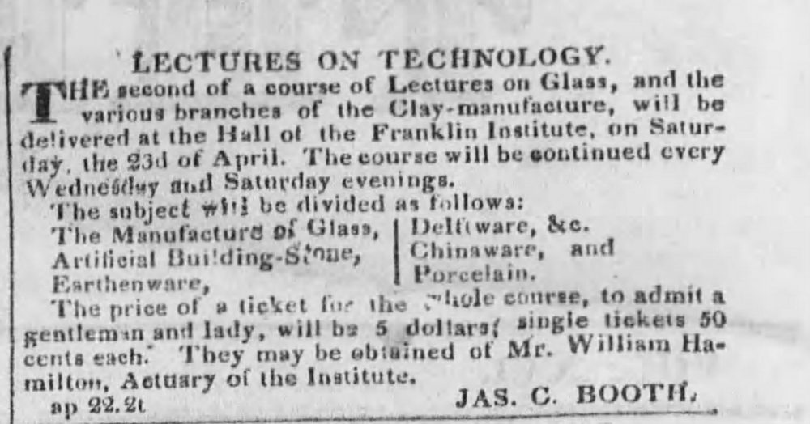
Geology is a practical science closely related to chemistry, leading Booth to assist state geologist Henry D. Rogers with the first geological survey of Pennsylvania features and minerals in 1836.
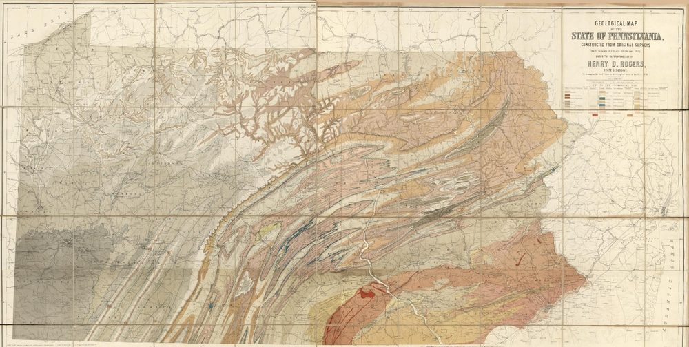
Those fascinated with the terrain of Pennsylvania’s mountainous backbone would be surprised to learn that Booth is credited with the discovery that the mountains forming the middle belt of the state consist of two separate formations.
Afterward, he became Delaware’s state geologist from 1837 to 1841, conducting and publishing its first geological survey in 1841, “Memoir of the Geological Survey of the State of Delaware, including the Application of the Geological Observations to Agriculture,” his resume citing his membership in the American Philosophical Society, the Academy of Natural Sciences, and Professor of Technical Chemistry in the Franklin Institute of Philadelphia.
He returned to the University of Pennsylvania to become its first Professor of Chemistry. Before long he moved from there to become a melter and refiner at the U.S. Mint in Philadelphia from 1847-1888, retiring shortly before his death.
Harriet Dawson Coleman (1802–1865)
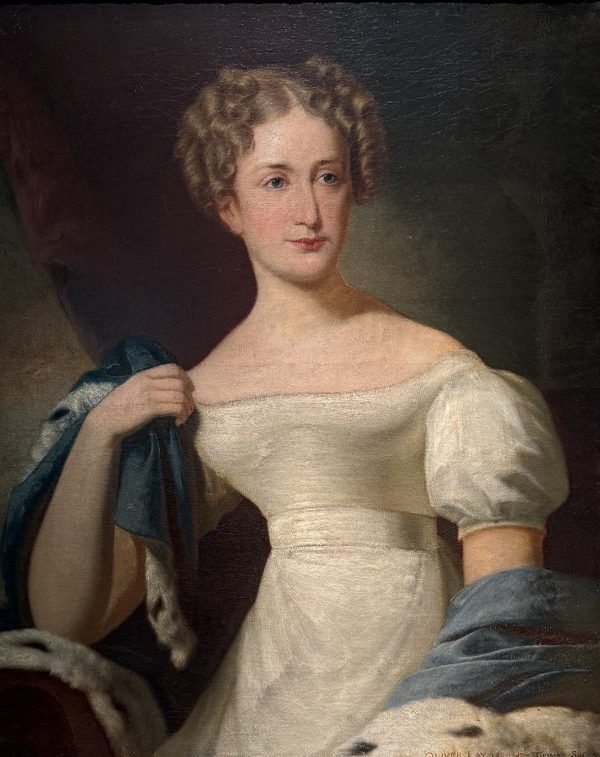
This beautiful portrait of Harriet as a younger woman raises an interesting story of its own.
The painting is signed “Oliver Lay 1888 after Thomas Sully.” The original was probably created before 1843, the year of Booth’s visit, as she would have been in her forties by then. She died three years before this copy was made.
Oliver Lay began his art career after 1860, some of his work now residing in the Smithsonian, and this being among his last before his death in 1890.
Though Thomas Sully is known for his famous portraits of historic figures including Washington, Jefferson and even the Coleman sisters, Coleman family records are quite emphatic that this portrait was originally painted by Jacob Eicholtz of Lancaster, famous in his own right. So why did Lay credit Sully?
It is not at all surprising that such an accomplished mind as James Booth found itself in the circle of esteemed friends of the Coleman family.
Booth had befriended Harriet Dawson Coleman, widow of second-generation James Coleman (d. 1831). We are reminded how prominent this family was in the region, from the 18th to 20th centuries. James’ father Robert Coleman had connected politically and socially with George Washington and other leaders of the first days of our nation.
Harriet was the mother of two sons Robert and George Dawson, and three daughters, Anna, Sarah Hand, and Harriet. Her husband James ran the family iron business at Elizabeth upon Robert Coleman’s retirement in 1809. On James’ death Harriet oversaw much of the business until her very young sons (age 6 and 8) came of age, his brothers (William, Edward and Thomas) serving as guardians.
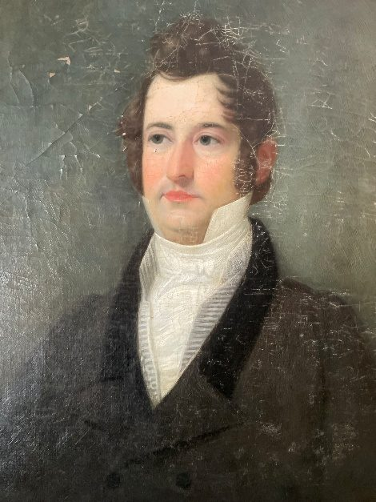
Harriet’s own father George Dawson had been a British officer in America who later settled in Philadelphia. Her grandfather Roper Dawson owned property on Staten Island during colonial days (the property lost as a result of the Revolution). The Dawson family roots trace back to the famous Arborfield estate in England.
The Coleman-Booth connection probably grew from a social connection in Philadelphia. During this summertime stay at Elizabeth Furnace, Booth likely met the other three remaining Coleman siblings and their mother Anne Caroline (Old) Coleman. Only three of the fourteen survived their mother, widow of Robert Coleman, passing away in the following year.
More From “The Letter”
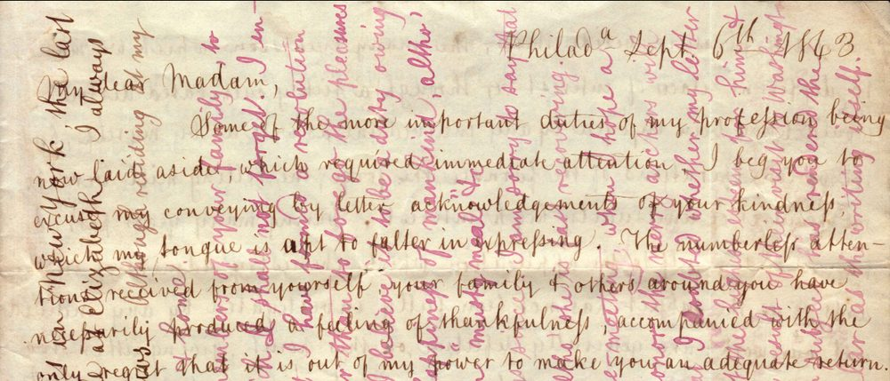
In his letter to Harriet Coleman, Booth wished not to be found conceited but in admitting his fondness for botany, geology and minerology, he found the countryside around Elizabeth furnace deeply pleasurable.
Both the quiet pursuit of those sciences and the “higher enjoyments of society” stoked his pleasure, as well as the excursions around the county. But he returned to his passion, noting the technical operations of Elizabeth furnace, the forge, and the rolling mill being of “unusually high interest.”
He laments to Harriet how Chemistry dwelt among the “Arts,” whereas the subject has not been sufficiently investigated in terms of applications and development of technology (bearing in mind the state of science in the early 19th century). He declares his “anxiety” or passion to collect materials “on which to base the science of Technology, with reference to chemical principles.”
Though steam power was emerging, most things still operated either by beasts or water power. In 1843 Ezra Cornell was just beginning to experiment with a telegraph line from Baltimore to Washington, decades before he formed his own institution of higher learning. We cannot comprehend a society that barely knew the basics of electricity let alone its practical comforts.
Might we at least glimpse this man’s motivation in his pursuit of chemistry and minerology, an insight into the explosion of industry and technology that later followed and continues to our present era, in which some now dream of missions to Mars and self-driving automobiles.
Harriet may have found this passion amusing, though how much she and her family grasped is another question. They certainly understood something about the production of iron. During the summer of Booth’s visit, they were introducing hot-blast technology to the furnace at Elizabeth, which must have captivated his imagination. He would later be credited with developing a hot blast method for refining gold and silver.
Within a few years her young sons would be bringing new technology to Lebanon, with anthracite-fired hot blast iron furnaces. Steel would not come until a decade later still.
But Harriet did hold her own in conversing with James, who admits “I should scarely have troubled you with these details did I not know that you feel an interest in the useful arts.”
More Curiosities
Booth’s letter turns from the regret of “taking leave of Elizabeth and its inmates” to returning to the busy life in his “old arm chair” and desk-full of business that would occupy him for the next year.
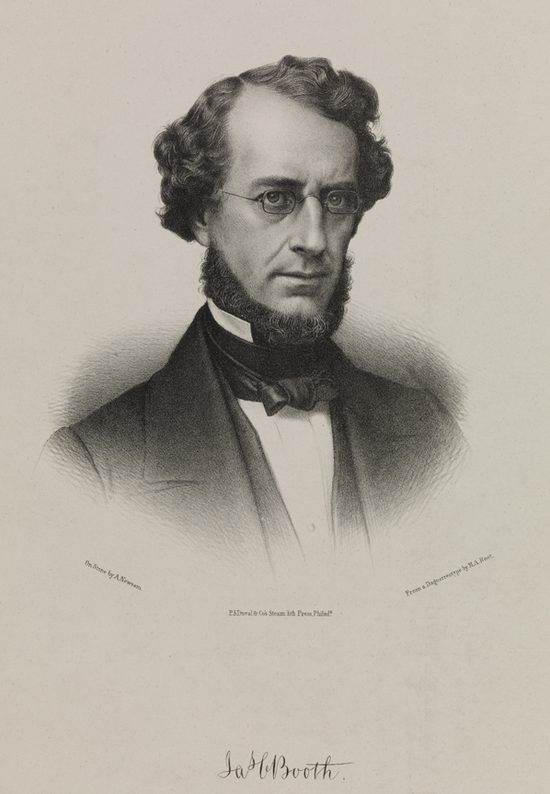
He developed a course of lectures, giving students instruction in practical chemistry, ranging from “the arts of dyeing and calico printing” to processes for testing the amount of sugar in syrups, and the analysis of ores.
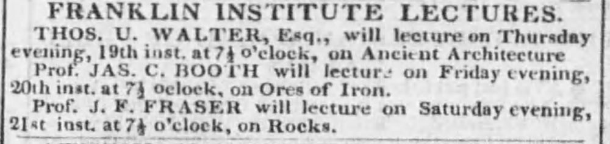
Mr. Bayard of the Chestnut Hill mine in Lancaster came to him, requiring analysis of iron-ore, hoping to convince potential investors from England of their worth.
Booth analyzed “green sand” (also known as ‘marl’) from Annapolis, Maryland to determine its richness for application as fertilizer to soil.
A large glass company engaged him to remedy a defect in glass that had stymied them for years, and which he expected would keep him challenged for awhile.
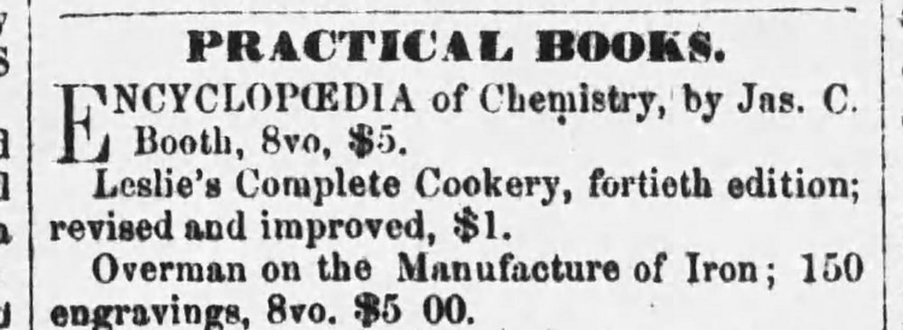
Finally having just published the first edition of his monumental eight-volume encyclopedia of chemistry that year (1843), there were already demands for updates and a second edition (finally published in 1862). This tome sold for $5 in 1851.
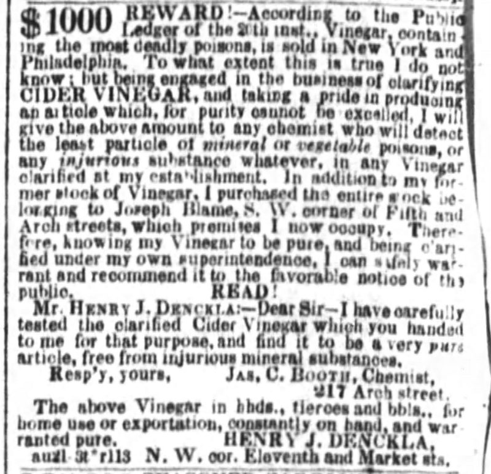
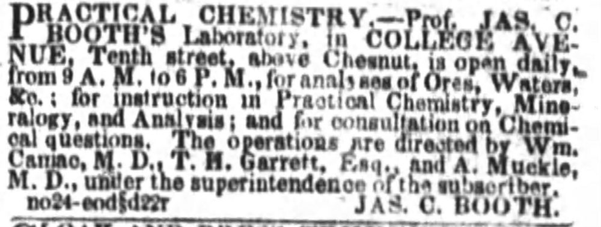
His dream of advancing the study of Chemistry as a practical science was realized in 1850 when the University of Pennsylvania established the Department of Chemistry as Applied Arts, its fourth school.
Although Booth was engaged as its first professor for about five years he was more heavily engaged at the United States Mint. There he advanced the science of metallurgy, with developing new methods of refining gold.
The gold and silver rushes of 1849 created demand for new ways of processing those ores. With scientist Richard Sears McCulloh, Booth developed a technique of adding zinc to refine gold more efficiently.
He also developed a “wind furnace” for refining large quantities of gold more efficiently, a process using air blasts through a tuyere to achieve higher temperatures (possibly inspired by his examination of the technology of the iron furnace at Elizabeth).
He oversaw the production of the nation’s first silver and copper coins. He is credited with the addition of nickel to the copper penny in 1857.
Final Years
Booth found time in the 1850s to “settle down” and marry Margaret Martinez Cardeza, together raising four children.
Late in life he served as President of the American Chemical Society, with the distinction of being the first to serving three terms from 1883 to 1885.
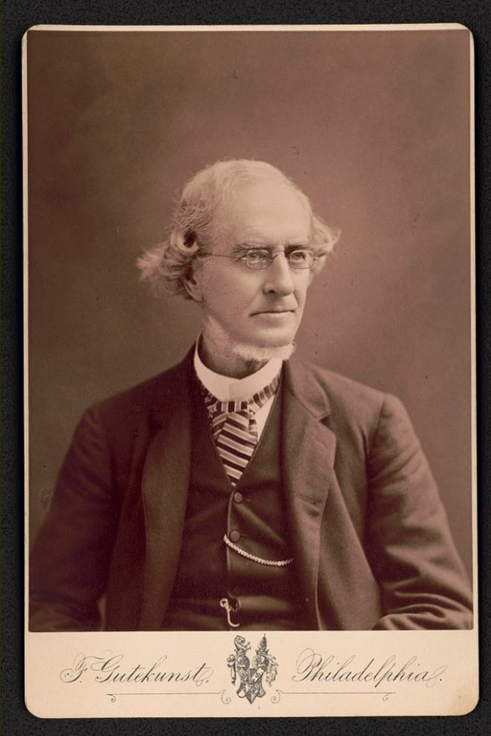
The news of his retirement from the Mint in 1887 was carried in papers around the country. One quoted him as saying “he has served Uncle Sam long enough to deserve a rest in his declining years.” He died the following year.
By his own words and life James Booth demonstrated the balance of art, science, faith and fellowship, a more complete man than many of us today. In that letter to Harriet he refers to his own “widow’s mite,” the ability and duty to forego some personal business that he might gladly contribute to the happiness of others.
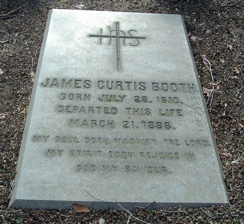
Closing – in all that this man accomplished, his life seems to be a credit to his Creator. The inscription on his grave: “My soul doth magnify the Lord and my spirit doth rejoice in God my Saviour,” a quote from Mary’s Magnificat, Luke 1:46.
Craig Coleman, original material.
In sympathy with Booth, this author holds a Bachelor of Arts degree in Chemistry from Cornell’s School of Arts and Sciences, and a profound appreciation for technology of all kinds.
Originally published on LebTown, June 24, 2025.